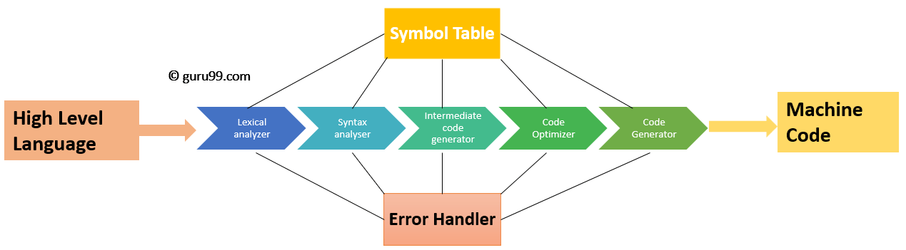
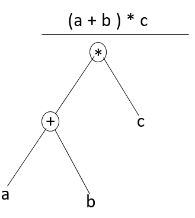

Programming Languages

Introduction
Programming languages are a wonderful world, they fascinate us with the way they work wether you are new to programming and want to know how they are implemented or you are already exprienced and wonder how you can make your own language. Me myself, I have always dreamt about making one. So in order to achieve that let's dive into the guts of the working of programming languages and try to understand their core concepts in order to perceive how they can be implemented.
First, before seeing all what we stated above, let's have an isight about what are programming languages and why in first place did we need to have a programming languages; and in this matter a proper understanding of how computers work seems required.
How do computers work ?
At the hardware level, computers understand one language, called machine language (also called object code). This is the set of instructions supported by the computer's processor hardware and is specific to each type of processor. This object code language is numeric in nature and expressed in binary, which is a numeric coding made up of only 1s and 0s (base 2). It is very tedious to program in binary, so higher level languages were created to make it easier to create programs.So what are programming languages ?
Definiton :
Programming languages are the tools we use to write instructions for computers to follow. Computers “think” in binary — strings of 1s and 0s. Programming languages allow us to translate the 1s and 0s into something that humans can understand and write. A programming language is made up of a series of symbols that serves as a bridge that allow humans to translate our thoughts into instructions computers can understand. Through this definition we may have now a basic undrstanding of what programming languages are.Let's me surprise you right now that not all languages are created or work the ame way, actually based on their functionning or concepttion we can talk about a variety of them. Now let's dig deeper into their types.
High level vs Low level :
This classification is based on the closeness of the language to the binary code :
Low-level** programming languages are closer to machine code, or binary. Therefore, they’re more difficult for humans to read (although they’re still easier to understand than 1s and 0s). The benefit of low-level languages is that they’re fast and offer precise control over how the computer will function.
High-level programming languages are closer to how humans communicate. High-level languages use words (like object, order, run, class, request, etc.) that are closer to the words we use in our everyday lives. This means they’re easier to program in than low-level programming languages, although they do take more time to translate into machine code for the computer.
We can talk about a sencond important classification based on how languages execute our statements and instructions :
Compiled / Interpreted
Compiled Languages
Compiled languages are converted directly into machine code that the processor can execute. As a result, they tend to be faster and more efficient to execute than interpreted languages. They also give the developer more control over hardware aspects, like memory management and CPU usage.

Interpreted Languages
Interpreters run through a program line by line and execute each command individually .
Since we talked about compiling/interpreting, we can move safely now to talk about how programming languages can be implemented. In fact, when you program you're just writing a human readable text, and using this compiler/interpreter we can transform our text ( source code ) into a binary code that can be run on the machine and executes what we really want from the machine. So you may understand it right now, to create a new programming language we have to focus on the translation phase. New programming language = New compiler or interpreter

Overview on translators ( compilers/interpreters ) :
The translation process converts code written by a programmer into machine code that a computer can execute. Machine code is a type of low-level language, which has ones and zeros. So, what the translator does is converts the high-level code you create in a programming language to machine code.
Without translators, you would have to code in machine language. Each high-level programming language that you know uses one of three translation methods: a compiler, an interpreter, or a hybrid of the two :
Hybrid translation employs a compiler and an interpreter. Hybrid translation compiles high-level source code to a lower-level form, such as bytecode. It then uses an interpreter to run that bytecode.
In the rest of this article, and for the sake of simplicity, we are going to focus on the architecture of a compiler since the interpreter is similar to it in many features. The diagram above ( compiled languages part ) represents a compiler in its most basic form. The compiler has several phases. Each phase transforms the code from one state to another. The goal of each compiler phase is to create an output that is easier for the succeeding phase to manipulate. The general structure of a compiler is as follows:

Now let's analyze every phase individually :
- Phase 1: Lexical Analysis
Lexical Analysis is the first phase when compiler scans the source code. This process scans left to right, character by character, and group these characters into tokens. Here, the character stream from the source program is grouped in meaningful sequences by identifying the tokens. It makes the entry of the corresponding tickets into the symbol table and passes that token to next phase. The primary functions of this phase are:
Identify the lexical units in a source code Classify lexical units into classes like constants, reserved words, and enter them in different tables. It will Ignore comments in the source program Identify token which is not a part of the language
Example: x = y + 10
Tokens :
"X" : identifier "=" : Assignment operator "Y" : identifier "+" : Addition operator "10" : Number
- Phase 2: Syntax Analysis
Syntax analysis is all about discovering structure in code. It determines whether or not a text follows the expected format. The main aim of this phase is to make sure that the source code was written by the programmer is correct or not. Syntax analysis is based on the rules based on the specific programing language by constructing the parse tree with the help of tokens. It also determines the structure of source language and grammar or syntax of the language. Here, is a list of tasks performed in this phase:
- Obtain tokens from the lexical analyzer
- Checks if the expression is syntactically correct or not
- Report all syntax errors
- Construct a hierarchical structure which is known as a parse tree
Example : Any identifier/number is an expression If x is an identifier and y+10 is an expression, then x= y+10 is a statement. Consider parse tree for the following example :
(a+b)*c

In Parse Tree :
- Interior node: record with an operator filed and two files for children
- Leaf: records with 2/more fields; one for token and other information about the token
- Ensure that the components of the program fit together meaningfully
- Gathers type information and checks for type compatibility
Checks operands are permitted by the source language
Phase 3: Semantic Analysis :
Semantic analysis checks the semantic consistency of the code. It uses the syntax tree of the previous phase along with the symbol table to verify that the given source code is semantically consistent. It also checks whether the code is conveying an appropriate meaning. Semantic Analyzer will check for Type mismatches, incompatible operands, a function called with improper arguments, an undeclared variable, etc. Functions of Semantic analyses phase are:
Helps you to store type information gathered and save it in symbol table or syntax tree Allows you to perform type checking In the case of type mismatch, where there are no exact type correction rules which satisfy the desired operation a semantic error is shown Collects type information and checks for type compatibility Checks if the source language permits the operands or not Example :
float x = 20.2; float y = x*30;
In the above code, the semantic analyzer will typecast the integer 30 to float 30.0 before multiplication.
- Phase 4: Intermediate Code Generation
Once the semantic analysis phase is over the compiler, generates intermediate code for the target machine. It represents a program for some abstract machine. Intermediate code is between the high-level and machine level language. This intermediate code needs to be generated in such a manner that makes it easy to translate it into the target machine code. Functions on Intermediate Code generation:
It should be generated from the semantic representation of the source program Holds the values computed during the process of translation Helps you to translate the intermediate code into target language Allows you to maintain precedence ordering of the source language It holds the correct number of operands of the instruction Example For example,
total = count + rate * 5 Intermediate code with the help of address code method is:
t1 := int_to_float(5) t2 := rate * t1 t3 := count + t2 total := t3
- Phase 5: Code Optimization
The next phase of is code optimization or Intermediate code. This phase removes unnecessary code line and arranges the sequence of statements to speed up the execution of the program without wasting resources. The main goal of this phase is to improve on the intermediate code to generate a code that runs faster and occupies less space. The primary functions of this phase are:
It helps you to establish a trade-off between execution and compilation speed Improves the running time of the target program Generates streamlined code still in intermediate representation Removing unreachable code and getting rid of unused variables Removing statements which are not altered from the loop Example: Consider the following code
a = intofloat(10) b = c * a d = e + b f = d Can become
b =c * 10.0 f = e+b
- Phase 6: Code Generation
Code generation is the last and final phase of a compiler. It gets inputs from code optimization phases and produces the page code or object code as a result. The objective of this phase is to allocate storage and generate relocatable machine code. It also allocates memory locations for the variable. The instructions in the intermediate code are converted into machine instructions. This phase coverts the optimize or intermediate code into the target language. The target language is the machine code. Therefore, all the memory locations and registers are also selected and allotted during this phase. The code generated by this phase is executed to take inputs and generate expected outputs.
Example:
a = b + 60.0
Would be possibly translated to registers.
MOVF a, R1 MULF #60.0, R2 ADDF R1, R2
Symbol Table Management :
A symbol table contains a record for each identifier with fields for the attributes of the identifier. This component makes it easier for the compiler to search the identifier record and retrieve it quickly. The symbol table also helps you for the scope management. The symbol table and error handler interact with all the phases and symbol table update correspondingly.
Error Handling Routine:
In the compiler design process error may occur in all the below-given phases:
- Lexical analyzer: Wrongly spelled tokens
- Syntax analyzer: Missing parenthesis
- Intermediate code generator: Mismatched operands for an operator
- Code Optimizer: When the statement is not reachable
- Code Generator: When the memory is full or proper registers are not allocated
- Symbol tables: Error of multiple declared identifiers
Conclusion
Through this article we had a quite clear idea of how programming languages are implemented under the hood.But in order to actually make a real compiler/interpreter a more profound knowledge must be acquired in order to accomplish this task.